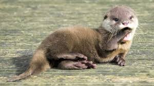
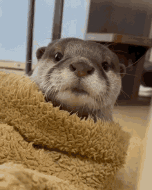

River Otters
are playful and social animals that live in freshwater habitats. They have sleek fur, webbed feet, and a long tail that helps them swim. River otters are excellent swimmers and can hold their breath for several minutes underwater. They feed on fish, amphibians, and crustaceans, using their sharp teeth to catch their prey. River otters are known for their playful behavior, often sliding down muddy banks or playing with each other in the water. They are an important part of the ecosystem, helping to maintain healthy aquatic environments. Otters are very
Learn more about river otters here!
I love sea otters! They are so cute and playful. Did you know that sea otters hold hands while they sleep to keep from drifting apart? They also have the densest fur of any animal, which helps keep them warm in cold water. Sea otters are truly amazing creatures!
,